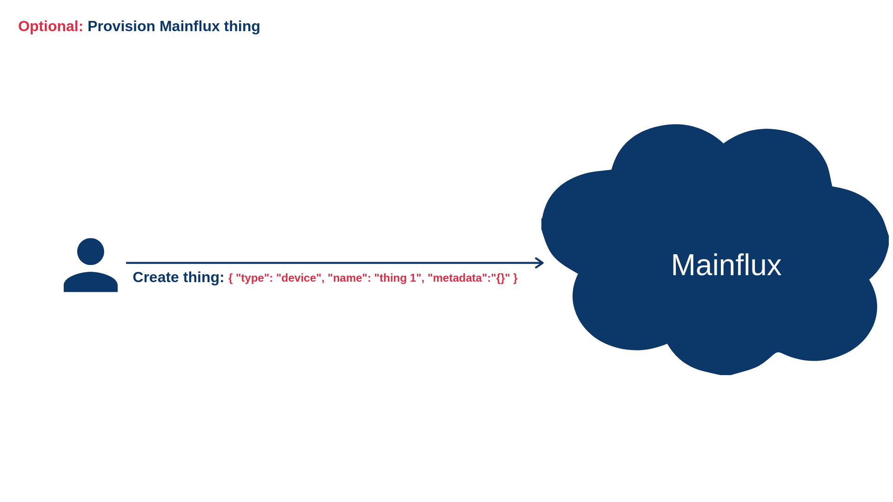

Bootstrap#
Bootstrapping refers to a self-starting process that is supposed to proceed without external input. Magistrala platform supports bootstrapping process, but some of the preconditions need to be fulfilled in advance. The device can trigger a bootstrap when:s
- device contains only bootstrap credentials and no Magistrala credentials
- device, for any reason, fails to start a communication with the configured Magistrala services (server not responding, authentication failure, etc..).
- device, for any reason, wants to update its configuration
Bootstrapping and provisioning are two different procedures. Provisioning refers to entities management while bootstrapping is related to entity configuration.
Bootstrapping procedure is the following:
 1) Configure device with Bootstrap service URL, an external key and external ID
1) Configure device with Bootstrap service URL, an external key and external ID
Optionally create Magistrala channels if they don't exist

Optionally create Magistrala thing if it doesn't exist

 2) Upload configuration for the Magistrala thing
2) Upload configuration for the Magistrala thing
 3) Bootstrap - send a request for the configuration
3) Bootstrap - send a request for the configuration
 4) Connect/disconnect thing from channels, update or remove configuration
4) Connect/disconnect thing from channels, update or remove configuration
Configuration#
The configuration of Magistrala thing consists of three major parts:
- The list of Magistrala channels the thing is connected to
- Custom configuration related to the specific thing
- Thing Secret and certificate data related to that thing
Also, the configuration contains an external ID and external key, which will be explained later. In order to enable the thing to start bootstrapping process, the user needs to upload a valid configuration for that specific thing. This can be done using the following HTTP request:
curl -s -S -i -X POST -H "Authorization: Bearer <user_token>" -H "Content-Type: application/json" http://localhost:9013/things/configs -d '{
"external_id":"09:6:0:sb:sa",
"thing_id": "7d63b564-3092-4cda-b441-e65fc1f285f0",
"external_key":"key",
"name":"some",
"channels":[
"78c9b88c-b2c4-4d58-a973-725c32194fb3",
"c4d6edb2-4e23-49f2-b6ea-df8bc6769591"
],
"content": "config...",
"client_cert": "PEM cert",
"client_key": "PEM client cert key",
"ca_cert": "PEM CA cert"
}'
In this example, channels field represents the list of Magistrala channel IDs the thing is connected to. These channels need to be provisioned before the configuration is uploaded. Field content represents custom configuration. This custom configuration contains parameters that can be used to set up the thing. It can also be empty if no additional set up is needed. Field name is human readable name and thing_id is an ID of the Magistrala thing. This field is not required. If thing_id is empty, corresponding Magistrala thing will be created implicitly and its ID will be sent as a part of Location header of the response. Fields client_cert, client_key and ca_cert represent PEM or base64-encoded DER client certificate, client certificate key and trusted CA, respectively.
There are two more fields: external_id and external_key. External ID represents an ID of the device that corresponds to the given thing. For example, this can be a MAC address or the serial number of the device. The external key represents the device key. This is the secret key that's safely stored on the device and it is used to authorize the thing during the bootstrapping process. Please note that external ID and external key and Magistrala ID and Magistrala key are completely different concepts. External id and key are only used to authenticate a device that corresponds to the specific Magistrala thing during the bootstrapping procedure. As Configuration optionally contains client certificate and issuing CA, it's possible that device is not able to establish TLS encrypted communication with Magistrala before bootstrapping. For that purpose, Bootstrap service exposes endpoint used for secure bootstrapping which can be used regardless of protocol (HTTP or HTTPS). Both device and Bootstrap service use a secret key to encrypt the content. Encryption is done as follows:
- Device uses the secret encryption key to encrypt the value of that exact external key
- Device sends a bootstrap request using the value from 1 as an Authorization header
- Bootstrap service fetches config by its external ID
- Bootstrap service uses the secret encryption key to decrypt Authorization header
- Bootstrap service compares value from 4 with the external key of the config from 3 and proceeds to 6 if they're equal
- Bootstrap service uses the secret encryption key to encrypt the content of the bootstrap response
Please have on mind that secret key is passed to the Bootstrap service as an environment variable. As security measurement, Bootstrap service removes this variable once it reads it on startup. However, depending on your deployment, this variable can still be visible as a part of your configuration or terminal emulator environment.
For more details on which encryption mechanisms are used, please take a look at the implementation.
Bootstrapping#
Currently, the bootstrapping procedure is executed over the HTTP protocol. Bootstrapping is nothing else but fetching and applying the configuration that corresponds to the given Magistrala thing. In order to fetch the configuration, the thing needs to send a bootstrapping request:
curl -s -S -i -H "Authorization: Thing <external_key>" http://localhost:9013/things/bootstrap/<external_id>
The response body should look something like:
{
"thing_id":"7d63b564-3092-4cda-b441-e65fc1f285f0",
"thing_key":"d0f6ff22-f521-4674-9065-e265a9376a78",
"channels":[
{
"id":"c4d6edb2-4e23-49f2-b6ea-df8bc6769591",
"name":"c1",
"metadata":null
},
{
"id":"78c9b88c-b2c4-4d58-a973-725c32194fb3",
"name":"c0",
"metadata":null
}
],
"content":"cofig...",
"client_cert":"PEM cert",
"client_key":"PEM client cert key",
"ca_cert":"PEM CA cert"
}
The response consists of an ID and key of the Magistrala thing, the list of channels and custom configuration (content field). The list of channels contains not just channel IDs, but the additional Magistrala channel data (name and metadata fields), as well.
Enabling and disabling things#
Uploading configuration does not automatically connect thing to the given list of channels. In order to connect the thing to the channels, user needs to send the following HTTP request:
curl -s -S -i -X PUT -H "Authorization: Bearer <user_token>" -H "Content-Type: application/json" http://localhost:9013/things/state/<thing_id> -d '{"state": 1}'
In order to disconnect, the same request should be sent with the value of state set to 0.
Using curl request for secure bootstrap configuration#
- Encrypt the external key.
First, encrypt the external key of your thing using AES encryption. The encryption key is specified by the MG_BOOTSTRAP_ENCRYPT_KEY environment variable. Use a library or utility that supports AES encryption to do this. Here's an example of how to encrypt using Go:
package main
import (
"crypto/aes"
"crypto/cipher"
"crypto/rand"
"fmt"
"io"
)
type reader struct {
encKey []byte
}
func (r reader) encrypt(in []byte) ([]byte, error) {
block, err := aes.NewCipher(r.encKey)
if err != nil {
return nil, err
}
ciphertext := make([]byte, aes.BlockSize+len(in))
iv := ciphertext[:aes.BlockSize]
if _, err := io.ReadFull(rand.Reader, iv); err != nil {
return nil, err
}
stream := cipher.NewCFBEncrypter(block, iv)
stream.XORKeyStream(ciphertext[aes.BlockSize:], in)
return ciphertext, nil
}
func main() {
data := []byte("<external_key>")
r := reader{
encKey: []byte("<crypto_key>"),
}
encryptedData, err := r.encrypt(data)
if err != nil {
fmt.Println("Error encrypting data:", err)
return
}
fmt.Printf("%x\n", encryptedData)
}
Replace <external_key> and <crypto_key> with the thing's external key and MG_BOOTSTRAP_ENCRYPT_KEY respectively.
- Make a request to the bootstrap service.
Once the key is encrypted, make a request to the Bootstrap service. Here's how to do this using curl:
curl --location 'http://localhost:9013/things/bootstrap/secure/<external_id>' \
--header 'Accept: application/json' \
--header 'authorization: Thing <encyrpted_external_key>' --output -
The response from the Bootstrap service will be in encrypted binary format. Store this response in a file for later use.
curl --location 'http://localhost:9013/things/bootstrap/secure/<external_id>' \
--header 'Accept: application/json' \
--header 'authorization: Thing <encyrpted_external_key>' --output ~/<desired\>/<path\>/<file_name.txt>
- Decrypt the response
Finally, decrypt the response using a function. Here's an example of how to do this using Go:
package main
import (
"crypto/aes"
"crypto/cipher"
"log"
"os"
)
func main() {
encodedData, err := os.ReadFile("~/<desired\>/<path\>/<enc_file_name.txt>")
if err != nil {
log.Fatal(err)
}
key := []byte("<crypto_key>")
block, err := aes.NewCipher(key)
if err != nil {
log.Fatal(err)
}
if len(encodedData) < aes.BlockSize {
log.Fatal("ciphertext too short")
}
iv := encodedData[:aes.BlockSize]
encodedData = encodedData[aes.BlockSize:]
stream := cipher.NewCFBDecrypter(block, iv)
stream.XORKeyStream(encodedData, encodedData)
err = os.WriteFile("~/<desired\>/<path\>/<decry_file_name.txt>", encodedData, 0644)
if err != nil {
log.Fatal(err)
}
}
Using Magistrala CLI for secure bootstrap configuration#
To use Magistrala CLI for the secure bootstrap configuration, use the following command:
magistrala-cli bootstrap secure <external_id> <external_key> <crypto_key>
magistrala-cli bootstrap bootstrap secure '09:6:0:sb:sa' 'key' 'v7aT0HGxJxt2gULzr3RHwf4WIf6DusPp'
For more information about the Bootstrap service API, please check out the API documentation.